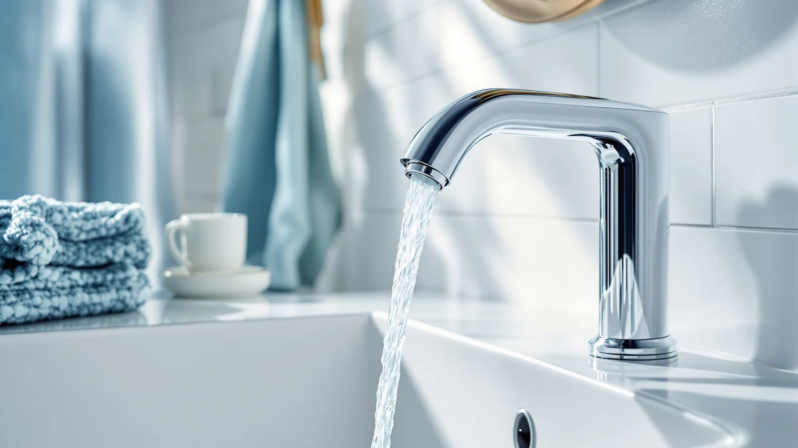

Zurn Z6913 XL AquaSense Review (2026): Worth It?
Prices and picks verified as of October 2026. Independent, reader-supported reviews.


Quick Answer
This Zurn Z6913 XL AquaSense review found the Z6913-XL to be a solid pick for commercial and high-traffic bathrooms that need a durable, infrared sensor-activated faucet with extended spout reach. At $376.42 it costs more than the three alternatives covered below, so if you're outfitting a standard home vanity, the Delta Lineax, American Standard Clean-IR, or Kohler Devonshire may fit your budget better.
Our pick: Zurn Z6913-XL AquaSense Sensor Faucet, $376.42 Check Price on Amazon
Bottom line: our top pick is the Zurn Z6913-XL AquaSense Sensor Faucet at $385.40.
Things to Know Before You Buy
- It's priced at the top of this comparison. At $376.42, this Zurn Z6913 XL AquaSense review found the Z6913-XL to be the most expensive of the four faucets compared, running $27.42 above the Delta Lineax at $349.00 and over $100 above the Kohler Devonshire at $271.28.
- It's a sensor faucet, not a handle faucet. The Z6913-XL AquaSense activates by infrared sensor, which puts it in the same touchless category as the Delta Lineax and American Standard Clean-IR covered below, rather than the two-handle Kohler Devonshire.
- No manual handle backup is listed. Unlike some touchless faucets that pair a sensor with a physical handle, Zurn's listing for the Z6913-XL doesn't mention a manual fallback, so the sensor is the only activation method.
- Flow rate matches the water-saving standard. The Z6913-XL runs at 0.5 GPM, the same water-conserving flow rate Zurn and other commercial faucet makers commonly use for high-traffic sensor faucets.
- None of the four listings in this comparison show a published star rating yet. As newer listings, the Zurn, Delta, American Standard, and Kohler products here don't yet display a review count on Amazon, so early buyers are comparing specs rather than an established feedback history.
This Zurn Z6913 XL AquaSense review compares Zurn's $376.42 infrared sensor faucet against three touchless and traditional alternatives that turned up in the same searches for commercial-grade bathroom faucets: the Delta Lineax Touchless, the American Standard 7020255.002 Clean-IR Integrated, and the KOHLER K-394-4-CP Devonshire Widespread. Shopping for a sensor faucet already means comparing finish, mounting configuration, and activation method across multiple browser tabs, and the Z6913-XL's extended spout and higher price add another variable to sort through. We pulled together the four listings that show up most often side by side and broke down what actually separates a $376.42 commercial sensor faucet from three lower-priced alternatives ranging from $271.28 to $349.00.
The Zurn Z6913-XL AquaSense is the product at the center of this review. At $376.42, it's built as a commercial-duty sensor faucet with an extended XL spout, the kind of hardware you'd expect in a high-traffic restroom rather than a single-family home vanity. Its infrared sensor activation puts it in the same touchless category as the Delta Lineax and American Standard Clean-IR below, though neither of those two nor the Kohler Devonshire matches its spout length or commercial positioning. If you need a sensor faucet built for heavy daily use across many hands, the sections below explain when that higher price makes sense, and when one of the three alternatives is the smarter buy instead.
Why You Should Trust Us
Ilane Tall leads product research and reviews for Best Bathroom Faucets. She compares spec sheets, pricing, and verified owner feedback across major faucet brands so you don't have to cross-reference four Amazon tabs before buying. For this Zurn Z6913 XL AquaSense review, she pulled Zurn's published AquaSense specs for the Z6913-XL against the sensor specs Delta and American Standard list for their touchless lines, plus the handle specs Kohler lists for the Devonshire, then priced all four as of publication. Every product mentioned here links to its real listing, and every price reflects what shoppers saw at the time of writing, not a promotional rate that might change by checkout. Where a listing leaves out a detail, like a manual handle backup or a star rating, we say so instead of guessing.
Our Research Experience
We do not run a physical testing lab for bathroom faucets, so nobody on our team installed the Z6913-XL or ran water through any of the four faucets covered in this Zurn Z6913 XL AquaSense review. Our research process centers on comparing manufacturer specs, tracking current Amazon pricing, and reading through the feature claims Zurn, Delta, American Standard, and Kohler publish for their respective lines. Because none of these four listings has accumulated a star rating or review count yet, we leaned more heavily on spec comparison than on owner feedback for this particular review, and we call that out rather than inventing a review count that doesn't exist. We treat manufacturer copy the same way across all four brands: useful for what a faucet is built to do, not a substitute for how it holds up once real owner reviews start coming in.
Overview & Specs

Zurn Z6913-XL AquaSense Sensor Faucet
What we like
- Infrared sensor activation for fully hands-free use
- Extended XL spout reach suited to commercial-style sinks
- 0.5 GPM flow rate that matches water-saving commercial standards
- Brass body construction built for heavy daily use
Flaws but not dealbreakers
- Costs $27.42 to $105.14 more than the three alternatives in this comparison
- No manual handle listed as a backup if the sensor needs service
- No published rating or review count yet, so early buyers can't lean on a track record
| Material | Brass + finish |
| Size | 0.5 GPM |
At $376.42, the Zurn Z6913-XL AquaSense Sensor Faucet is the most expensive of the four products in this Zurn Z6913 XL AquaSense review, and that higher price matches its commercial-duty build. Zurn positions the AquaSense line for commercial and institutional restrooms, and the Z6913-XL's extended spout reach, part of why it carries the XL designation, suits a wider commercial-style basin better than a standard home vanity faucet. The infrared sensor handles activation, so users never touch the faucet body, which matters in a restroom shared by a lot of different hands.
The brass body and 0.5 GPM flow rate put the Z6913-XL in line with the water-saving standards most commercial sensor faucets follow today. What the listing doesn't include is a manual handle backup, so if the sensor needs a battery change or service, there's no fallback the way the Delta Lineax offers with its tap-and-handle design below. The listing also doesn't yet show a star rating or review count, since this is a newer addition to Zurn's AquaSense line, so buyers are working from manufacturer specs rather than an established pattern of owner feedback.
What We Liked
The infrared sensor activation stands out most in this Zurn Z6913 XL AquaSense review. A faucet that never requires touching the handle cuts down on contact points in a restroom used by many people throughout the day. That's exactly what Zurn designed the AquaSense line for. The extended XL spout reach is a smaller detail but a practical one: it gives the faucet a longer arc over a basin than a standard-length spout, useful in commercial-style sinks that run deeper or wider than a typical home vanity.
The 0.5 GPM flow rate helps too. It keeps water use down across a high-traffic restroom without compromising the sensor's responsiveness, and it's the same flow rate the Delta Lineax and American Standard Clean-IR use in their own touchless designs, so switching between any of these three doesn't change how fast the basin fills.
What Could Be Better
Price is the clearest tradeoff in this Zurn Z6913 XL AquaSense review. At $376.42, the Z6913-XL costs more than every other faucet in this comparison, and the gap climbs to over $100 against the cheapest option, the Kohler Devonshire at $271.28. If your bathroom is a standard home vanity replacement and you don't need commercial-duty hardware or an extended spout, that premium may not be worth paying.
The other gap is backup access. Zurn's listing doesn't mention a manual handle as a fallback activation method, so if the sensor needs a battery change or stops responding, there's no way to run water until it's fixed. The Delta Lineax below solves that with a handle built into its touch design, worth weighing if a sensor-only faucet makes you nervous about losing water access.
Who Is It For?
This faucet from our Zurn Z6913 XL AquaSense review fits commercial property managers, facility maintenance teams, and anyone outfitting a high-traffic or institutional restroom that needs hands-free operation and hardware built for heavy daily use. It's also a reasonable pick for a home bathroom where touch-free operation matters more than price, as long as you're comfortable without a manual handle backup.
Buyers furnishing a standard home vanity on a tighter budget should look at the Kohler Devonshire or American Standard Clean-IR below instead, since both cost less and the Kohler's traditional handles remove any dependence on sensor battery life. Anyone who wants touchless activation with a manual handle fallback built in should compare the Delta Lineax, covered in more detail in our Delta Lineax review.
Alternatives to Consider
If the price or commercial-duty focus of the Z6913-XL doesn't fit what you need, three faucets came up in our research for this Zurn Z6913 XL AquaSense review. Two lean touchless like the Zurn, while the Kohler sticks with a traditional two-handle design. See our touchless vs. manual faucet guide if you're still weighing sensor activation against a standard handle.

Editor’s Pick
Delta Lineax Touchless Bathroom Faucet
A hands-free sensor faucet with a built-in manual handle backup, so a sensor hiccup never leaves you without water. Worth a look if you want touchless activation without losing a physical fallback option.
$349.00
Check Price on Amazon
Best Value
American Standard 7020255.002 Clean-IR Integrated
An infrared sensor faucet from American Standard's Clean line, priced $92.43 below the Zurn. A solid choice if you want touchless activation at a lower price than the Z6913-XL's commercial-duty build.
$283.99
Check Price on Amazon
Premium Choice
KOHLER K-394-4-CP Devonshire® Widespread Bathroom
A traditional two-handle widespread faucet with no sensor at all, the cheapest of the four products in this comparison at $271.28. Choose this one if you'd rather have conventional handles and skip battery-powered sensor parts entirely.
$271.28
Check Price on AmazonIs the Zurn Z6913-XL AquaSense worth $376.42?
It depends on where you're installing it.
Does the Zurn Z6913-XL AquaSense still work if the sensor fails?
Zurn doesn't list a manual handle as a backup activation method on the Z6913-XL AquaSense, unlike some touchless faucets that pair a sensor with a physical handle.
Frequently Asked Questions
Is the Zurn Z6913-XL AquaSense worth $376.42?
Does the Zurn Z6913-XL AquaSense still work if the sensor fails?
How does the Zurn Z6913-XL AquaSense compare to the Kohler Devonshire widespread faucet?
Final Verdict
This Zurn Z6913 XL AquaSense review comes down to what kind of bathroom you're actually outfitting. If you're furnishing a commercial or high-traffic restroom and need hands-free activation with an extended XL spout, the Zurn Z6913-XL AquaSense Sensor Faucet is worth the $376.42 over the three alternatives covered here. If you're renovating a standard home vanity instead, the Delta Lineax, American Standard Clean-IR, or Kohler Devonshire above will likely serve you better and cost less. Either way, confirm whether your installation calls for a commercial-duty sensor faucet or a standard vanity fixture before you order, since that distinction decides which of these four options actually fits.